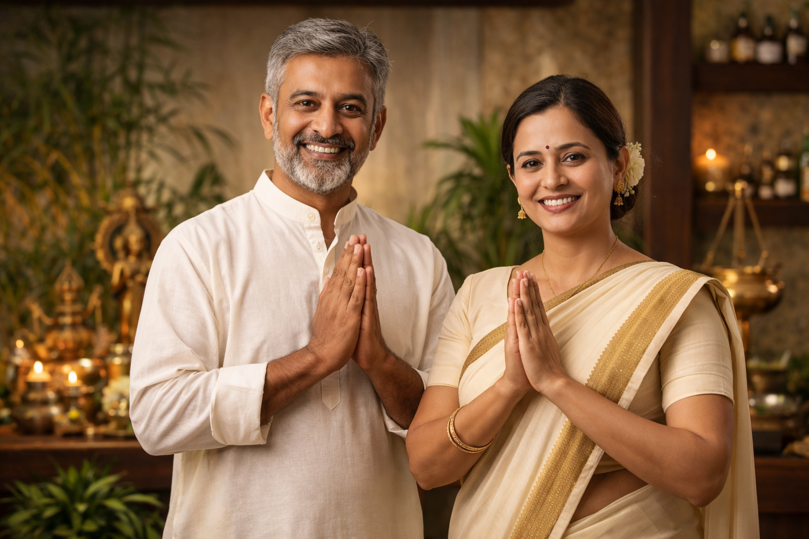
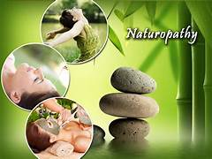

नैसर्गिक उपचारातून संपूर्ण आरोग्य
५०+ वर्षांचा अनुभव • ७५,०००+ रुग्णांचा विश्वास
कृपया अपॉइंटमेंट घेऊनच यावे.
आमच्याबद्दल (About Us)
श्री सिद्धी नैसर्गिक उपचार केंद्र हे केंद्र 2013 मध्ये सुरू झाले असून हे पूर्णपणे परिवाराद्वारे चालवले जाते. आमचा मुख्य फोकस Detox आणि आयुर्वेदिक उपचारांवर आहे.
कोणतीही जाहिरात न आता, फक्त लोकांच्या विश्वासावर आम्ही ७५,००० हून अधिक रुग्ण पूर्णपणे बरे केले आहेत.
"आमचा विश्वास फक्त नैसर्गिक उपचार पद्धतीवर आहे, ज्यामुळे शरीराला कोणतेही नुकसान न होता आजार मुळापासून बरा होतो."
50+ Years
Experience
75,000+
Happy Patients
100% Natural
No Side Effects
Peaceful
Environment
आमच्या सेवा (Our Services)
Panchkarma
शरीरातील विषारी द्रव्ये काढून टाकण्यासाठी आणि शरीर संतुलित ठेवण्यासाठी पंचकर्म उपचार.
Detox Therapy
रोगांपासून मुक्ती मिळवण्यासाठी शरीरातील टॉक्सिन्स नैसर्गिकरित्या काढून टाकले जातात.

Naturopathy
निसर्गाच्या सानिध्यात राहून नैसर्गिक घटकांद्वारे केली जाणारी उपचार पद्धती.
Meditation
मानसिक शांतता, तणावमुक्ती आणि मन स्थिर ठेवण्यासाठी विशेष सत्रे.
आमचे तज्ञ (Our Experts)
श्री शंकर गोळे
निसर्गोपचार तज्ञ५०+ वर्षांचा दांडगा अनुभव
दीपाली गोळे
आयुर्वेदिक आणि निसर्गोपचार तज्ञपनवेल स्पेशालिस्ट | २०+ वर्षांचा अनुभव
रुग्णांचे अनुभव (Reviews)
आमच्या उपचारांनी मिळालेली आरोग्यदायी सुटका
"गेल्या अनेक वर्षांपासून मला गुडघेदुखीचा त्रास होता, पण श्री सिद्धी केंद्रामध्ये उपचार घेतल्यावर मला खूप आराम मिळाला. नैसर्गिक उपचार खरोखरच सर्वोत्तम आहेत."
सुनिल मोरे"डिटॉक्स थेरपीमुळे माझ्या शरीरातील जडपणा कमी झाला आणि मला खूप फ्रेश वाटत आहे. इथले तज्ञ खूप छान मार्गदर्शन करतात."
अनिता देशपांडे"कोणतेही साईड इफेक्ट्स नसलेले उपचार शोधत असाल तर हे केंद्र सर्वोत्तम आहे. ७५,००० रुग्णांचा विश्वास सार्थ आहे!"
राजेश पाटील